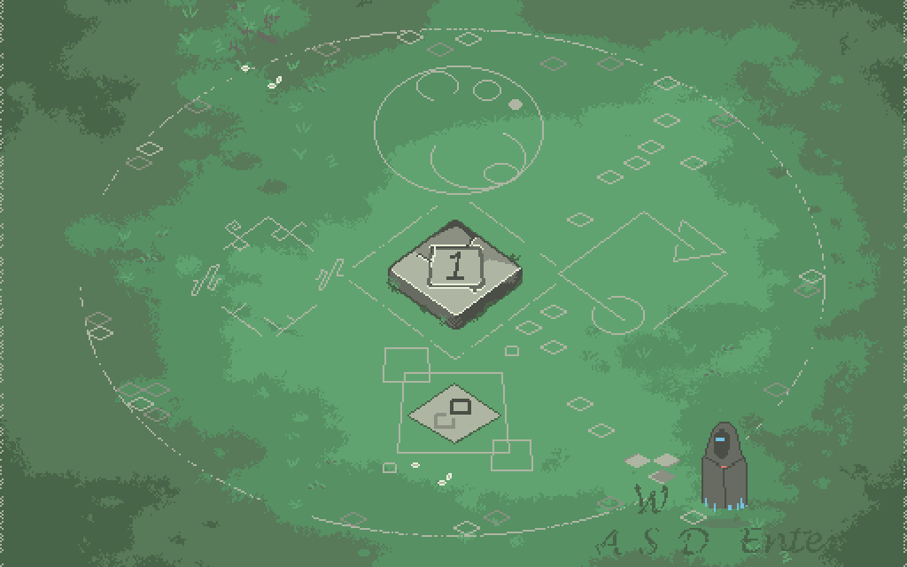
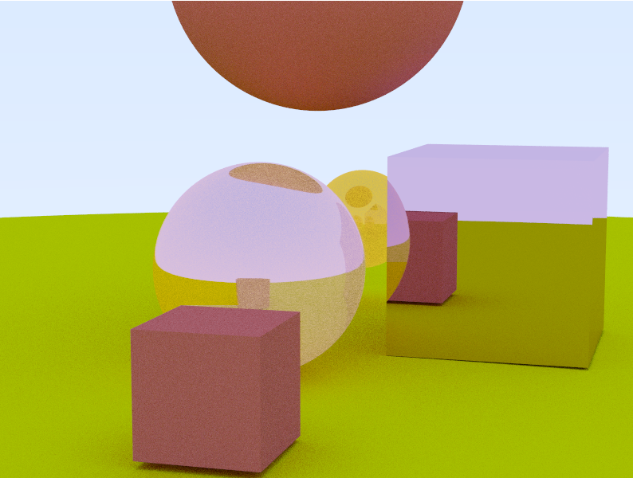
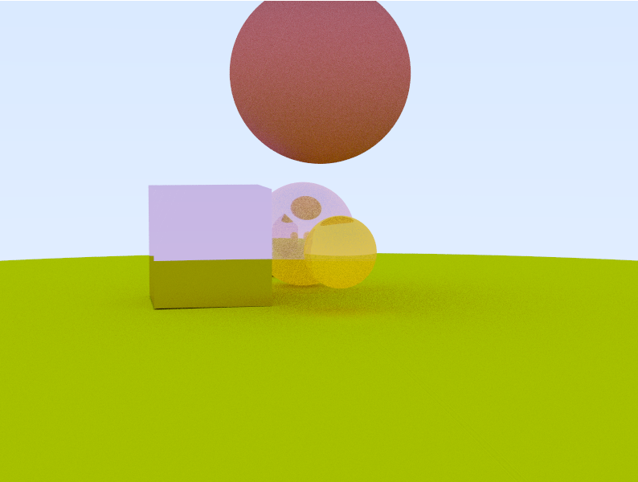
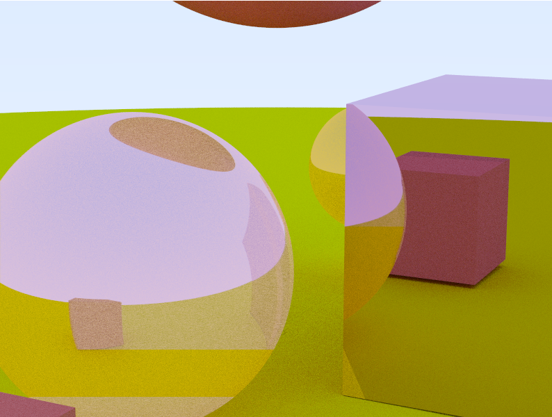

Memory training game
Link: https://aershov.itch.io/memory-tower

Dual-N-Back-like (cognitive training mechanics) game from scratch in C, without external libraries or engines.- Software renderer optimized with SIMD;
- Custom BMP file loader/parser for asset management and a WAV (RIFF) audio loader/parser for sound integration;
- A lightweight animation system and a Windows API layer to handle user input and window management
Logic puzzle game
An educational puzzle game grounded in formal logic principles. The game teaches first-order logic and natural deduction through interactive, rule-based challenges (in progress).
Game AI Agent Simulation with Steering Behaviors
AI system simulating autonomous agents (vehicles) with dynamic behaviors: seek, pursuit, flee, evade, wall/obstacle avoidance, and wander.
- Car agent that actively seeks/pursues nearby vehicles within range, dynamically switching to evasion tactics when targeted by pursuers;
- Steering behaviors (e.g., velocity matching, collision avoidance) for smooth navigation in environments with moving obstacles and boundaries;
- Adaptive AI where "prey" agents transition from wandering to evasive maneuvers based on threat detection.
Interactive demo: run demo
Simple ray tracer
CPU-based ray tracer. Written from scratch in C. Renders 3D scenes with camera movement, geometric primitives (spheres, planes), and multiple surface materials (diffuse, reflective, refractive). Includes ray-object intersection algorithms, perspective camera controls, and physically based lighting models for realistic shadows and reflections.


Profiler
A lightweight profiler leveraging the x86 RDTSC (Read Time-Stamp Counter) instruction to measure code block execution times with cycle-accurate precision.
High-resolution timing captures performance metrics for arbitrary code segments, enabling granular analysis of bottlenecks. A simple API marks code regions (e.g., PROFILE_START, PROFILE_END) and report timing results in human-readable formats (cycles, nanoseconds).
8086 CPU simulator
Partial 8086 CPU simulator made as part of the computer enhance course (https://www.computerenhance.com/), capable of executing common x86 instructions (e.g., MOV, ADD, SUB, DIV, MUL, JMP, CMP, etc.). It's capable of executing most of this assemler files https://github.com/cmuratori/computer_enhance/tree/main/perfaware/part1.
Custom CPU
Within the educational project (https://www.nand2tetris.org/ ) I developed a simple CPU. The course is based on project-based learning. Using Hardware Description Language (HDL), which is conceptually similar to Verilog, and starting with NAND logic gates, the project guides you to create NOT, AND, OR, XOR gates, then proceed to build Multiplexors, Demultiplexors, Half-adders, Adders, Arithmetic Logical Unit, Registers, RAM units, and so on.